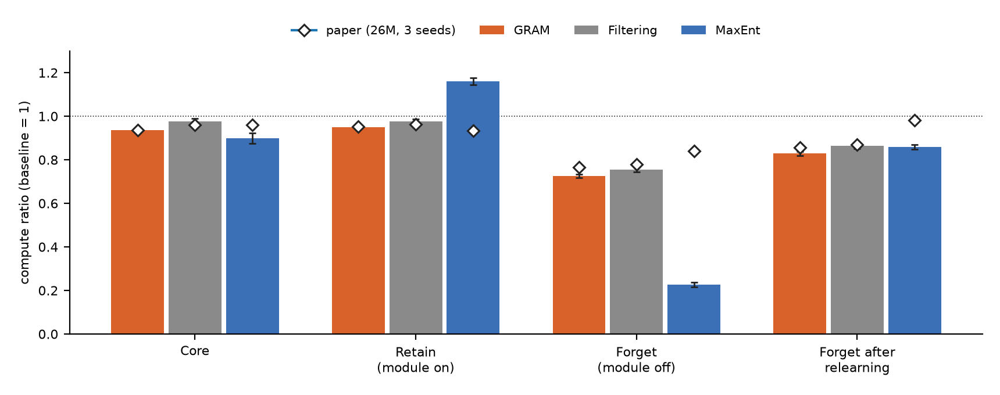
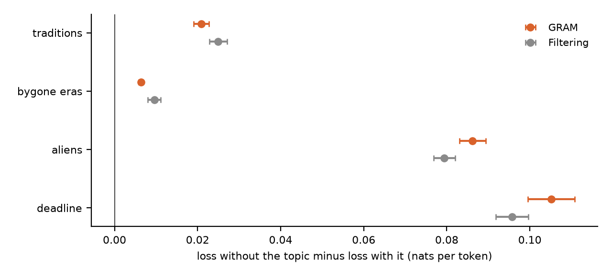
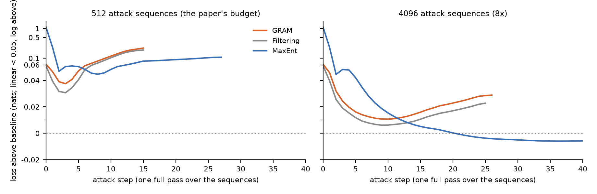
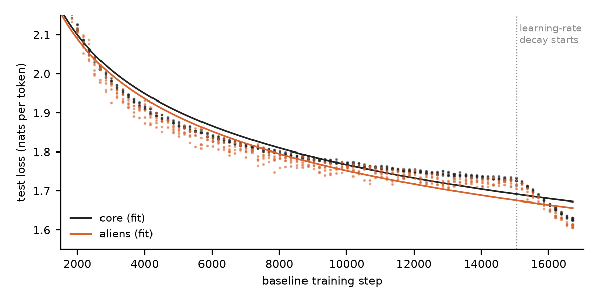

← Research·Replications · Episode 1·Experiments·
Switch off a pretrained module and a topic goes, about as far as if the model never saw it
For people weighing access control as a safety tool: can one pretrained model hold a restricted capability in a part you can unplug at deployment? We rebuilt the 26M-parameter experiment of "Modular Pretraining Enables Access Control" (GRAM) from its released code, on 5 seeds, with data filtering, post-hoc unlearning and a relearning attack beside it.
make_cover.py from results/.Summary: the short answer and the key results
In short
Does switching off a GRAM module remove what it learned, as well as never training on the data?
At 26M parameters, yes, about as well as the paper reports. With a restricted topic's module switched off, the model scored a compute ratio of 0.73 ± 0.01 on that topic (the paper: 0.77), level with models that never saw it (0.75 ± 0.01; the paper: 0.78), while the 44 open topics stayed within 0.012 nats of the full-data model. A 512-sequence relearning attack got back no more from GRAM than from filtering (0.83 against 0.86). Post-hoc unlearning (MaxEnt) looked far stronger before the attack, 1.309 nats of "forgetting" against GRAM's 0.063, but two attack steps took 1.257 nats of it back, where GRAM and filtering moved 0.023: the unlearning was mostly a surface layer. After the full attack all three sat in the same place, so the paper's finding that unlearning ends up easier to relearn than filtering did not replicate. And with 4,096 attack sequences every method, the filtered model included, relearned the topic to the full-data level: at 26M parameters nothing resists a determined fine-tune, so the attack can rank methods but cannot show robustness.
Key results
| What we tested | GRAM (ours) | Compared with |
|---|---|---|
| Module off: is the topic gone? (compute ratio on the forgotten topics, lower = more removed) | As gone as filtering. 0.73 ± 0.01 | Filtering 0.75 ± 0.01; the paper: GRAM 0.77, filtering 0.78 |
| Does everything else survive? (core and retained topic, higher = better) | Yes. Core 0.94 ± 0.01, retained topic 0.95 ± 0.01 | The paper: 0.94 and 0.95; filtering 0.98 and 0.98 |
| Short relearning attack (512 sequences): forgotten topic after the attack | No easier to relearn than filtering. 0.83 ± 0.01 | Filtering 0.86 ± 0.01; MaxEnt unlearning 0.86 ± 0.01, the same place (the paper: MaxEnt 0.98, worse than both) |
| Named side-finding: how much of the "forgetting" do two attack steps undo? | Almost none of GRAM's. 0.023 ± 0.001 nats of 0.062 | Filtering 0.024 of 0.054; MaxEnt 1.257 ± 0.077 of 1.314 |
| Long relearning attack (4,096 sequences, 8x) | Relearned, like filtering. 0.96 ± 0.01 | Filtering 0.99 ± 0.01; MaxEnt 1.08 ± 0.02 |
| Is each topic in its own module? (loss, module off minus on) | For three of four topics. Deadline 0.105 ± 0.006, aliens 0.086 ± 0.003, traditions 0.021 ± 0.002, bygone eras 0.006 ± 0.000 nats | Filtering's gap on the same topics: 0.096, 0.079, 0.025, 0.010 |
Compute ratio (CR): the share of the full-data baseline's training needed to reach a model's loss on a topic, read off the baseline's own loss curve (section 2); 1 = as good as the baseline. Means over 5 seeds ± 90% t-intervals, the paper's convention (95% intervals in the tables below). Each method's number is averaged over its five capability profiles. Losses in nats per token on held-out stories.
01Introduction
Train one small model on 2.2 million children's stories, four of whose 48 topics (stories about deadlines, alien encounters, bygone eras and cultural traditions) are marked restricted. Serve it with the "alien encounters" module switched off and its loss on alien stories rises by 0.086 nats per token; switch the module back on and it falls to within a hundredth of a model trained on everything. Train a separate model that never sees an alien story, and it is worse on them than its twin that did by 0.079. The module held about what a separate filtered training run would have cost to leave out.
What is known. The gold standard for removing a dangerous capability is to never train on it: data filtering resists relearning, unlike post-hoc unlearning, which a short fine-tune often undoes (Do Unlearning Methods Remove Information from Language Model Weights?). But filtering needs one training run per capability profile. "Modular Pretraining Enables Access Control" proposes GRAM to get many profiles from one run and reports, from 50M to 5B parameters, that it tracks filtering on what is removed, what is kept, and what a fine-tune can bring back.
What is missing. An independent rerun. The paper's smallest experiment (26M parameters, Simple Stories) is cheap enough to rebuild in a day, its code and per-run numbers are public, and it tests the whole claim: removal, retention, and the relearning attack against both filtering and unlearning.
What this note does. It reimplements that experiment from the released code, pre-registers five predictions from the paper's own numbers, and runs it on 5 seeds. Contributions:
- A replication, theirs against ours, of every headline number of the paper's Simple Stories experiment (GRAM, data filtering, MaxEnt unlearning, the relearning attack).
- A stronger attack than the paper's (8 times the data), which shows where toy-scale relearning tests stop being informative: even the filtered model relearns.
- A measurement of what the first two attack steps take back, which separates a capability that was hidden (unlearning: 1.257 nats back) from one that was never stored (GRAM and filtering: 0.023), where the paper's end-of-attack score cannot.
- Per-topic gaps and raw losses beside the paper's compute-ratio yardstick, which turns out to miss the baseline's own curve by up to 0.035 nats.
02Setup
Data. Simple Stories, split as in the paper's code (10% test, seed 42). The four topics first in alphabetical order are restricted, as in the paper: "a deadline or time limit", "alien encounters", "bygone eras" and "cultural traditions" (11M training tokens each). The other 44 topics (503M tokens) are the core. Every test half below is a fixed 50% of each topic's held-out stories; the other half (val) was used only to stop the relearning attack and pick MaxEnt's settings.
The model is the paper's: 8 layers, width 512, 8 attention heads sharing 2 key-value heads, rotary positions, a 2,048-wide feed-forward block, a 4,096-token vocabulary, context 256, and attention that stops at story boundaries; 26,257,920 parameters. Training: one pass over the data, batch 128 x 256 tokens, AdamW at 5e-3 with 10% warm-up and 10% decay, gradient clipping at 1.
GRAM layer: y = core_mlp(h) + Σ_{i on} module_i(h) # module_i: 512 -> 192 -> 512
restricted batch of topic i: module i on; update module i, and the shared weights with p = 0.3
core batch: with p = 0.5 one random module on (both updated); otherwise core only
deploy: core + the modules of the topics this user may access| Method | What it trains | Training runs for 5 profiles | Role |
|---|---|---|---|
| Baseline | one dense model on everything | 1 | The yardstick (CR = 1) |
| GRAM | one model with four modules, gradient-routed; compute matched to the baseline by trimming batches (16,187 against 16,715 steps) | 1 | The method |
| Data filtering | five dense models: core only, and core plus one restricted topic each | 5 | Gold standard |
| MaxEnt unlearning | the baseline, then 2,000 steps pushing restricted topics toward uniform guesses while keeping the rest (lr 0.0003, weight 30) | 1 + 5 short | Post-hoc unlearning |
Terms. A profile is what one deployment serves: the core alone, or the core plus one restricted topic. For each profile, the core is scored as core, the served restricted topic as retain, and the other restricted topics as forget. The relearning attack (the paper's "elicitation") fine-tunes the deployed model on 512 training sequences of one forgotten topic (one full-batch AdamW step per round, lr 1.25e-3, up to 200 rounds, stopped when the val loss has not improved for 10 rounds) and reports the best round; with GRAM the topic's module stays off.
Compute ratio. Loss differences of a few hundredths of a nat are hard to read, so the paper converts each loss into training compute. The baseline's test loss on each topic was recorded 100 times during training and fitted with a power law L(s) = A·s−α; a model's loss is mapped to the step at which the baseline would reach it, and divided by the step the baseline's own final loss maps to. A forget CR of 0.75 means the model knows the topic as well as the baseline did after three quarters of its training. Here 0.04 nats above the baseline's final loss is about CR 0.8. We report raw losses beside every ratio (section 4.5 says why).
What counts as success (pre-registered, PREREGISTRATION.md), each from the paper's own numbers:
- P1: GRAM's forget CR is at most filtering's + 0.05.
- P2: GRAM's core and retain CR are both at least 0.90.
- P3: for every restricted topic, switching its module off raises its loss, with the 95% interval above zero.
- P4: after the attack, GRAM is at most filtering + 0.05, and MaxEnt is at least GRAM + 0.05.
- P5 (secondary): with 4,096 attack sequences, GRAM is at most filtering + 0.05.
03How the study was run
- Read the paper and its code: the model, the GRAM batch schedule (
do_routed_unordered), filtering, MaxEnt, the relearning attack and the compute-ratio fit, and the released Simple Stories results, which give the "paper" column. - Pre-register the setup, five predictions and the known differences, and commit them before any run.
- Prepare the data (one CPU job): token counts match the paper's metadata exactly (for example 11,336,257 training tokens of alien stories).
- Smoke-test every stage for 30 steps on one GPU: 26,257,920 parameters, as in the paper.
- Run each seed as one job on one H100: the baseline with its loss curve; the MaxEnt grid (seed 1 only: 9 settings on the val half, the strongest whose core loss rose at most 0.03 nats); GRAM with its five profiles and 16 attacks plus 4 long ones; five filtered models with their attacks; MaxEnt on five profiles with their attacks. Seeds 1 and 2 ran in parallel, then 3 and 4, then 5.
- Analyse with
analyze.py(compute ratios, seed means and intervals, the five tests), draw figures withmake_figures.py, and fill every number in this page fromresults/summary.jsonwithfill_note.py.
| Fixed before any run | Changed after reading results |
|---|---|
| The paper's model, data split, restricted topics, GRAM settings (p_as 0.3, p_cr 0.5), learning rate and schedule; the attack (512 sequences, lr 1.25e-3, patience 10) and the 8x attack; the MaxEnt grid and its selection rule; the five predictions; the seed rule (3, extended to 5 if spend after 3 seeds stayed under $25) | Nothing in the runs. Added after the results: raw-loss columns and the curve-fit check (section 4.5), and the per-topic filtering gap as a reference for P3 |
Known differences from the paper, fixed in advance: our weights are float32 with bfloat16 arithmetic (the paper's code stores them in bfloat16); a core batch mixes topics; the attack picks its round on the val half and reports the test half (the paper uses one split for both); MaxEnt uses one grid-chosen setting for every profile and seed (the paper tuned each by Bayesian optimisation); the baseline curve has 100 points (the paper: 200).
Conditions: PyTorch 2.5.1, one H100 per seed, compiled model, bfloat16 autocast. One pretraining run took about 10 minutes (the baseline 627 s); a whole seed about 90 minutes.
04Results
4.1 GRAM's numbers replicate: the topic goes as far as with filtering, the rest stays
Table 1 and Figure 1 put our numbers beside the paper's. With modules switched off, GRAM's forget CR was 0.73 ± 0.01, data filtering's 0.75 ± 0.01: P1 hit. Everything else stayed: core 0.94 ± 0.01 and retained topic 0.95 ± 0.01, both above the 0.90 bar (P2 hit). In raw loss, GRAM's core was 0.012 nats above the full-data model and its forgotten topics 0.063 above it, against 0.055 for the filtered models. Every GRAM and filtering compute ratio is within 0.05 of the paper's; our forget ratios run 0.03 to 0.04 lower than theirs, for both methods alike, so the gap between the two methods replicates even where the levels shift slightly.
| Method | Metric | Ours, CR ± 95% | Paper, CR | Ours, nats above baseline |
|---|---|---|---|---|
| GRAM | forget | 0.73 ± 0.01 | 0.77 | 0.063 ± 0.005 |
| GRAM | core | 0.94 ± 0.01 | 0.94 | 0.012 ± 0.003 |
| GRAM | retain | 0.95 ± 0.01 | 0.95 | 0.009 ± 0.005 |
| GRAM | forget after attack | 0.83 ± 0.01 | 0.86 | 0.035 ± 0.005 |
| Filtering | forget | 0.75 ± 0.01 | 0.78 | 0.055 ± 0.001 |
| Filtering | core | 0.98 ± 0.02 | 0.96 | 0.004 ± 0.002 |
| Filtering | retain | 0.98 ± 0.01 | 0.96 | 0.004 ± 0.002 |
| Filtering | forget after attack | 0.86 ± 0.02 | 0.87 | 0.027 ± 0.001 |
| MaxEnt | forget | 0.23 ± 0.01 | 0.84 | 1.309 ± 0.079 |
| MaxEnt | core | 0.90 ± 0.03 | 0.96 | 0.019 ± 0.004 |
| MaxEnt | forget after attack | 0.86 ± 0.01 | 0.98 | 0.028 ± 0.001 |
Table 1. Means over 5 seeds; ± is the 95% t-interval over seeds. Each value averages the five capability profiles (forget: the topics a profile does not serve; retain: the one it serves). Paper: its released stories_agg_summary.csv (3 seeds). Nats: test loss minus the same seed's baseline.

4.2 Each topic lives in its own module, except one that barely differs from the core
The average hides the topics. Figure 2 shows each restricted topic's loss with its module off minus on, and beside it what filtering costs on the same topic (core-only model minus the model that also saw the topic). For deadlines, aliens and traditions the module's gap matches or exceeds filtering's: 0.105 ± 0.006, 0.086 ± 0.003 and 0.021 ± 0.002 nats against 0.096, 0.079 and 0.025. For bygone eras both are small: 0.006 ± 0.000 for GRAM, 0.010 for filtering. Stories about the past share most of their language with the 44 open topics, so there is little topic-specific knowledge to file in a module or to lose by filtering. P3 (every topic's interval above zero): hit.
A boring explanation, checked. Is "module off" simply a weaker model? No: with every module off, the core was only 0.012 nats behind the baseline, about a fifth of the forget gap, and switching on another topic's module (a "wrong module") left each forgotten topic where it was (cover, off-diagonal squares).

4.3 A short relearning attack leaves GRAM, filtering and unlearning in the same place
The attack fine-tunes each deployed model on 512 stories of a forgotten topic and keeps its best round. GRAM ended at 0.83 ± 0.01, filtering at 0.86 ± 0.01: GRAM was no easier to relearn than a model that never saw the topic. Post-hoc unlearning ended at 0.86 ± 0.01, level with both. The paper's MaxEnt ended at 0.98, clearly worse than its filtering (0.87); ours did not, so the second half of P4 fails and P4 is a miss. The best round came early (most within 1 to 4 attack steps, picked on the val half); after that, 512 stories overfit and the loss rose again (Figure 3, left).
Why did unlearning not stand out? Our MaxEnt setting, picked by the pre-registered grid, unlearned much harder than the paper's: before the attack its forgotten topics sat 1.309 nats above the baseline (CR 0.23; the paper's MaxEnt: 0.84), twenty times GRAM's 0.063. After the attack it nonetheless landed where filtering lands, which suggests the harsh setting also damaged the topic knowledge underneath (we did not test this directly). The pre-attack score said MaxEnt was by far the best remover; the attack said it was no better than filtering.
Named side-finding: two steps undo the surface. The end-of-attack score cannot tell knowledge that was hidden from knowledge that was relearned, because every method ends near the same floor. The first two attack steps can (exploratory, added after the results). Two full-batch steps took 1.257 ± 0.077 nats off MaxEnt's forgotten-topic loss, leaving it 0.057 above the baseline, about where GRAM and filtering start. The same two steps took 0.023 ± 0.001 off GRAM and 0.024 ± 0.000 off filtering. No model relearns 1.3 nats of a topic from two gradient steps on 512 stories; what came back was a layer of suppression that MaxEnt had laid over the outputs. GRAM's and filtering's losses moved by the same small amount, the amount genuine learning buys in two steps.
4.4 Named side-finding, the toy ceiling: with 8 times the attack data, even the filtered model relearns
The paper's attack is 512 sequences at every scale. We added one with 4,096 (about a tenth of a topic's training data) on the core-only profile. Everything came back: GRAM 0.96 ± 0.01, filtering 0.99 ± 0.01, MaxEnt 1.08 ± 0.02; in raw loss, GRAM ended 0.007 nats above the full-data model and filtering 0.003 (Figure 3, right). P5: hit. A model that never saw an alien story learned them to the full-data level from 4,096 examples, because at this scale a "capability" is mostly the general language of children's stories plus a little topic vocabulary. The relearning test here can tell a method that hides a capability (MaxEnt) from one that never stored it, but it cannot show that anything resists a determined fine-tune. The paper makes this point for filtering at scale ("partial recovery should be expected even from data-filtered models"); at 26M parameters, recovery is full.

4.5 The compute-ratio yardstick is coarse at this scale
The compute ratio reads a loss off a power law fitted to the baseline's loss curve. With the paper's learning-rate schedule, the loss drops sharply in the last 10% of training, as the learning rate decays, and a power law cannot follow that drop: the fit misses the baseline's own curve by up to 0.035 nats (root mean square), about half the forget gap it is used to measure (Figure 4). The ranking of methods does not depend on it (the nats columns in Table 1 give the same order), but a CR of 0.75 versus 0.78 is inside the yardstick's own error. Read the CRs as a ranking and the nats as the size.

05Compared with the paper
| The paper's claim | Where it shows it | At 26M, this replication |
|---|---|---|
| Ablating a module removes its capability, approximating data filtering | Simple Stories (26M), dual-use data (800M), scaling to 5B | ✓ forget CR 0.73 against 0.75 |
| It preserves the rest | Same | ✓ core 0.94, retain 0.95 |
| It resists recovery under fine-tuning like filtering | 800M, Simple Stories | ✓ at 512 sequences (0.83 against 0.86); ✗ for every method at 4,096 |
| … and better than post-hoc unlearning | 800M (MaxEnt), Simple Stories | ✗ by the paper's end-of-attack score (all level); ✓ by what two attack steps undo (1.257 against 0.023 nats) |
| The filtering gap widens with scale | 50M to 5B | Not tested (one size) |
| Modules compose; better than LoRA branches under partial labels | 800M, 400M | Not tested |
06How this connects to gradient routing in RL (GRAFT)
GRAM is one use of an idea this lab has tested before. Gradient Routing introduced the move: decide, per example, which parameters may learn from it. Beyond data filtering: knowledge localization for capability removal in LLMs applied it to dangerous knowledge with separate optimisers per parameter set, which GRAM adopts. Gradient Routing Localizes and Removes Unintended Behaviors in RL (GRAFT) applies it during RL: rollouts a monitor flags as reward hacks update a FORGET adapter, which is deleted before deployment. Our Gradient routing with an LLM monitor series replicated GRAFT with an LLM monitor, and found routing removed the hack only when the monitor caught nearly all of it.
| GRAM (this note) | GRAFT (our Episodes 1-2) | |
|---|---|---|
| When | Pretraining | RL fine-tuning |
| Who decides where a gradient goes | A label on the data | A monitor's flag on each rollout |
| Where it goes | One small module per capability | One forget adapter |
| At deployment | Modules switched on per user | The adapter deleted for everyone |
| What breaks it | Capabilities that overlap with the core (here: bygone eras) | A monitor that misses hacks (half recall: no effect) |
Both depend on the label. GRAM's labels here were perfect; the paper reports that with half of them missing GRAM still removes more than filtering, because once a module specialises it absorbs similar unlabelled data. That "absorption" is the same property GRAFT needs from an imperfect monitor, and the next test to run in both.
07Implications for AI safety
At the scale we could test, GRAM does what the paper says: one training run, five capability profiles, each as good as a separately filtered model at removing a topic and keeping the rest, and no easier to relearn from. That makes access control by module a cheaper stand-in for filtering, not a stronger one: whatever a filtered model gives up to a fine-tune, a GRAM model with the module off gives up too. Three cautions carry over to real dual-use data. A capability that shares most of its knowledge with permitted ones (our "bygone eras") cannot be filed away by either method. A pre-attack forgetting score can overstate removal many times over: MaxEnt's was twenty times GRAM's and almost all of it came off in two steps. And a relearning test only means something when it is scored against a filtered model and run large enough to relearn that model; at 4,096 sequences every method here, filtering included, gave the topic back. Score removal by what a short attack leaves, next to a data-filtered model, and report what the first steps of the attack undo, so suppression is not mistaken for removal.
08Predictions
Written before any run (PREREGISTRATION.md), from the paper's numbers.
| # | Prediction | Threshold | Result |
|---|---|---|---|
| P1 | Module off removes the topic like filtering | GRAM forget ≤ filtering + 0.05 | hit: 0.73 against 0.75 |
| P2 | The rest survives | GRAM core and retain ≥ 0.90 | hit: 0.94 and 0.95 |
| P3 | Each topic lives in its module | off − on > 0, 95% interval above zero, all 4 topics | hit: bygone eras 0.006 ± 0.000 |
| P4 | GRAM resists like filtering; unlearning does not | GRAM ≤ filtering + 0.05; MaxEnt ≥ GRAM + 0.05 | miss: 0.83, 0.86, 0.86 |
| P5 | The same under an 8x attack | GRAM ≤ filtering + 0.05 | hit: 0.96 against 0.99 |
Post-mortem. Four of five hit, and the GRAM numbers landed within a few hundredths of the paper's. The miss is informative: P4 assumed unlearning would be easier to relearn than filtering, as in the paper, and by the paper's end-of-attack score it was not; our pre-registered grid chose a much harsher unlearning setting than the paper's tuning did. What surprised us: how much of that harsher unlearning was surface (two steps took back 1.257 of 1.314 nats), and that the filtered model itself relearned fully at 4,096 sequences. What we would change: register a measure of how fast the first attack steps recover the loss, not only where the attack ends, and register an attack size large enough to relearn the filtered model as the ceiling.
09What this does not show
- Anything about scale. One size, 26M parameters. The paper's strongest claim, that the gap between filtered and full-data models widens with scale and GRAM tracks it to 5B, is not tested here, and the toy ceiling of section 4.4 may well not hold at scale: larger models learn more topic-specific knowledge that a filtered model cannot rebuild from 4,096 examples.
- Dual-use capabilities. Our restricted "capabilities" are story topics, as in the paper's own small experiment, chosen so that nothing hazardous is involved. Virology or exploit writing overlap with permitted knowledge in ways story topics may not.
- Downstream behaviour. Every number is a next-token loss on held-out stories, the paper's measure too. We did not test whether a model with a module off can still write an alien story when asked.
- Imperfect labels, composition, other baselines. All data were labelled; profiles served at most one module; the paper's LoRA-branch and DEMix baselines were not run.
- That unlearning is as good as filtering. MaxEnt used one setting from a 9-point grid on one seed (lr 0.0003, weight 30; core loss +0.013 on the val half), not the paper's per-profile Bayesian optimisation, and it unlearned much harder than the paper's (forget CR 0.23 against 0.84). Its tie with filtering after the attack is for this setting only; a gentler one, like the paper's, may leave more to relearn. Its retained topic also improved past the baseline (CR 1.16) because MaxEnt kept training on it, which flatters its retain score. The two-step measure was added after the results.
- Seeds. 5 seeds; per-topic gaps under about 0.01 nats are near the seed spread.
10Reproduce it
export MODAL_PROFILE=<your profile>
modal run modal_app.py::prep # tokenise Simple Stories (CPU, ~5 min)
modal run --detach modal_app.py::launch --seeds 1,2 # one H100 per seed, ~90 min each
modal run modal_app.py::pull # result JSON into results/runs/
python analyze.py && python make_figures.py && python make_cover.py && python fill_note.pyEvery number on this page is filled from results/summary.json by fill_note.py; make_figures.py prints what it plots, and experiments/repl-gram-modular-pretraining/reproduce.sh --dry-run lists every command. The model and training loop are in gram.py, about 400 lines.
11What’s next
- Find the size where filtering starts to resist. Repeat the 4,096-sequence attack at 100M and 400M parameters: a relearning test means something only above that size.
- Absorption with missing labels. Label half the restricted stories and check whether the unlabelled half still lands in the module, the property GRAFT also needs from an imperfect monitor.
- Behaviour, not loss. Prompt each profile to write a story on each topic and score the stories with a classifier.
12Questions and answers
What is GRAM?
Gradient-routed auxiliary modules: a pretraining method that adds a small feed-forward module per restricted capability beside each layer's main feed-forward block, and lets labelled data of that capability update mostly its module. Switching the module off at deployment removes the capability; one training run serves many capability profiles.
Does GRAM replicate?
At the paper's smallest scale, yes. On Simple Stories at 26M parameters over 5 seeds, a module switched off left its topic at compute ratio 0.73 (the paper: 0.77), level with data filtering (0.75), with core and retained topics at 0.94 and 0.95.
Can a fine-tune bring a removed capability back?
With 512 sequences, partly, and no more from GRAM than from a model that never saw the data. Post-hoc unlearning (MaxEnt) lost 1.257 nats of its forgetting in the first two steps and ended level with filtering. With 4,096 sequences, fully, for GRAM, filtering and unlearning alike: at 26M parameters, a story topic is easy to learn from scratch.
How is GRAM related to GRAFT?
Both are gradient routing: each training example updates only the parameters it is routed to, and those parameters are removed or switched off later. GRAM routes by data label during pretraining, into one module per capability; GRAFT routes by a monitor's flag during RL, into one adapter that is deleted.
AAppendix: data
results/runs/seed_N/baseline.json:steps,seconds,params,curve(100 rows:stepand the test loss ofcoreand each restricted topic, 16 batches each),testandval(final losses, 40 and 16 batches of 128 x 256 tokens).gram_eval.json:info(the batch schedule's counts),P_core,P_aux,profiles(per profile,testandvalloss per topic),all_on(every module on).gram_elicit.json: one row per attack:profile,label(the attacked topic),num_seq(512 or 4,096),best_round,val_curve,test_loss.filter_<profile>.jsonandfilter_<profile>_elicit.json: the same for each filtered model.maxent_<profile>.json:chosen(lr, alpha),stepsrun,final_kl,test,val,elicit.results/runs/maxent_choice.json: the 9-point grid on seed 1 (core loss rise and forget loss on the val half) and the chosen setting.results/summary.json: every number on this page;results/table.tsv: one row per seed, method, profile, topic and class (retain, forget, elicited_forget, elicited_forget_8x), with test loss, compute ratio and the attack's best round.results/spend_ledger.jsonl: every Modal launch with its estimate.
References and code
- Modular Pretraining Enables Access Control, arXiv 2607.08077; code and released results: agencyenterprise/modular-pretraining; project page modularpretraining.com.
- Gradient Routing: Masking Gradients to Localize Computation in Neural Networks, arXiv 2410.04332. Beyond data filtering: knowledge localization for capability removal in LLMs, arXiv 2512.05648. Gradient Routing Localizes and Removes Unintended Behaviors in RL, arXiv 2610.17062.
- Do Unlearning Methods Remove Information from Language Model Weights?, arXiv 2410.08827. Simple Stories, SimpleStories/SimpleStories.
- This lab: GRAFT with an LLM monitor (Episode 1), Episode 2.
How to cite
@misc{lie2026gramrepl,
author = {Albert Lie},
title = {Switch off a pretrained module and a topic goes, about as far as if the model never saw it},
year = {2026},
month = nov,
url = {https://albertlieyingadrian.github.io/steerlab/experiments/repl-gram-modular-pretraining/report/}
}